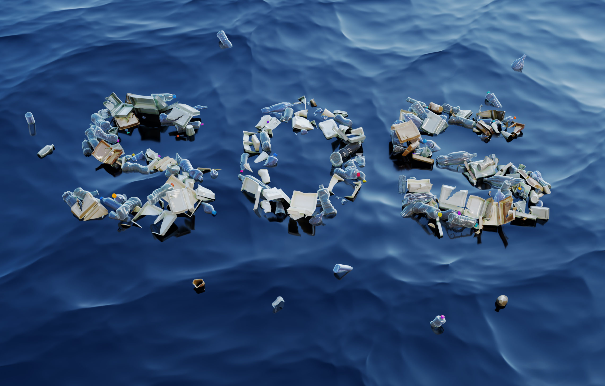
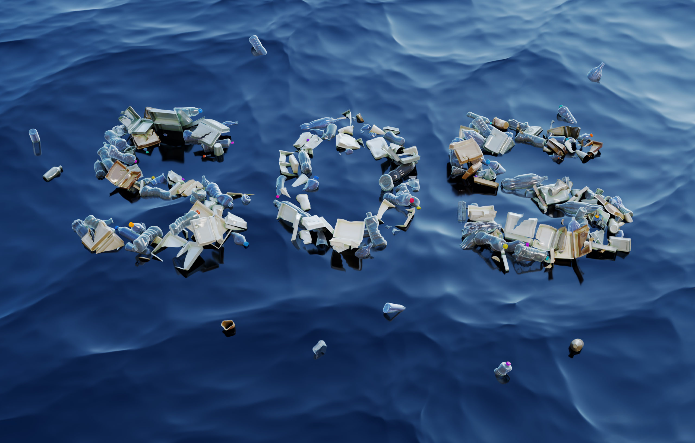
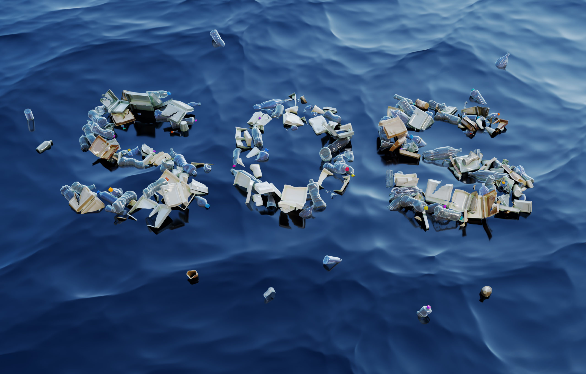
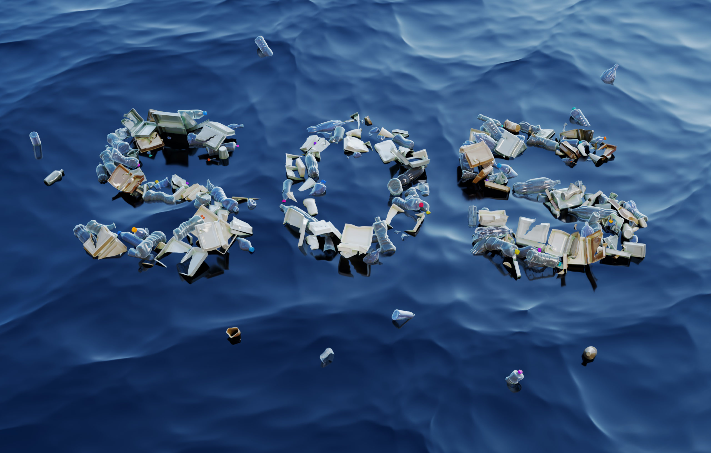

When it comes to marine conservation, preserving vulnerable resources always comes first. Tropical coral reefs, which comprise over 0.1% of the total ocean area, are ranked among the top biodiverse ecosystems on Earth. Such diverse ecosystems support almost one-quarter of all marine species. Every one of us has a responsibility to play a critical role in protecting coral reefs. Whether you live near the coast or hundreds of miles away, you can take steps to ensure coral reefs remain healthy and conserved.
Here are some ways you can contribute from home to conserve marine ecosystems: